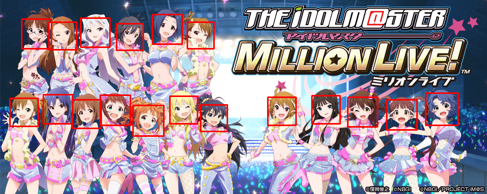
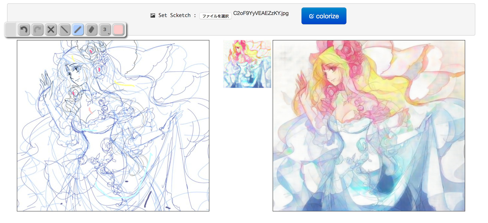

ACG相关AI项目-论文-代码-数据-资源
论文
自动勾线-线稿
-
Learning to Simplify: Fully Convolutional Networks for Rough Sketch Cleanup [Paper] [Code] [Blog] [2015]
-
早稻田大学15年经典论文。
-
粗糙手稿映射到精描线稿。
-
使用的是自建数据集，给定精致线稿让画师去照着描粗稿，这样避免了从线稿描到精稿时候添加和大改了很多线条。数据集没有开源…不过似乎作者给了训练好的权重。
-
We found that the standard approach, which we denote as direct dataset construction, of asking artists to draw a rough sketch and then produce a clean version of the sketch ended up with a lot of changes in the figure, i.e., output lines are greatly changed with respect to their input lines, or new lines are added in the output. This results in very noisy training data that does not perform well. In order to avoid this issue, we found that the best approach is the inverse dataset construction approach, that is, given a clean simplified sketch drawing, the artist is asked to make a rough version of that sketch.
-
自动线稿上色
-
Scribbler: Controlling Deep Image Synthesis with Sketch and Color [Paper] [Code] [2017]
-
User-Guided Deep Anime Line Art Colorization with Conditional Adversarial Networks [Paper] [Code] [2018]
- 既支持直接从线稿转换为色稿，也支持用户交互画点生成色稿。
- 生成器和检测器的输入进行了创新。生成器的输入是线稿、用户色点图、还有一个线稿的特征Map。检测器的输入是两对：（真实色稿，线稿特征）与（生成色稿，线稿特征）。这样做的好处是避免了直接让判别器看到原始线稿，从而一定程度上避免了过拟合。
- 线稿是通过XDoG转换色稿得来。
- Comment from reddit: I don’t have it locally but it should be easy to make an ‘illustration dataset’ simply by using a tag like
-monochrometo filter out any line-art. It’s easy to make a line-art dataset because that’s also a tag:lineart. Finally, you don’t need to half-ass the pairs dataset with fake pairs using XDoG because you can just use parent-child relationships to find all sets of related images, and then extract all pairs of monochrome vs non-monochrome, which will usually give you sketch to completed image. Or there are tags just for this, likecolored, for human colorization of BW images (and you can again use the parent/child relationships to filter more).
-
Line Art Correlation Matching Network for Automatic Animation Colorization
照片转动漫
- CartoonGAN: Generative Adversarial Networks for Photo Cartoonization [Paper] [Code] [2018]
- Unpaired image dataset training.
- Two loss: In generator, a semantic loss defined as an ℓ1 sparse regularization in the high-level feature maps of the VGG network. In discriminator, an edge-promoting adversarial loss for preserving clear edges
- Built a new set of data which is animation images with edge blurred. Traditional GAN discriminator only discriminate photo from carton(or real from false), but this discriminator has three classes: Normal Photo, Real Carton Image, and Blurred edge carton image.
动漫图片Embedding
- illustration2vec (i2v)。[Paper] [Code] [2015]
- 使用了VGG网络将任意动漫图片压缩为一个长度为4096的Vector。
- 同样，由于训练时Y为标签，这里可以使用该网络为动漫图片打标。
- 训练图片来自于Danbooru和Safebooru两个网站。共计使用了1,287,596张图片和它们的metadata。
- 标签分为四类：
General tags,copyright tags,character tags和rating tags。第一个是图片本身的特征，如“武器”，“微笑”，第二个是版权方，如“VOCALOID”；第三个是角色名字，如“hatsune miku”最后一个类别表示是18禁、擦边球还是全年龄图片。
简笔画转照片
其他GAN
-
Style GAN [Paper] [Code] [2019]
- NVIDIA出品
- 它可以连续控制生成图片的各种独立参数！
- 之前的GAN都是Input使用一个随机噪声，而NVIDIA这篇这是在许多层中间都添加一波噪声。层数越靠后，这些噪声控制的特征就越细节。
- gwern训练好的二次元StyleGAN模型：Link
-
animeGAN A simple PyTorch Implementation of GAN, focusing on anime face drawing.
数据集
纯动漫图片
-
Danbooru2019. [Release] [Code] [2019]
- Original or 3x512x512
- ~3TB or 295GB
- 3.69M or 2828400 images
- 108M tag instances (of 392k defined tags, ~29/image).
- Covering Danbooru from 24 May 2005 through 31 December 2019 (final ID: #3,734,659).
- Image files & a JSON export of the metadata.
-
Anime Face Dataset [Link][2019]
- 数据来源：Getchu
- 包含图片数目： 63,632
- 只包含脸部截取图片
- 大小：395.95MB
- 每张图片分辨率：90 * 90 ~ 120 * 120


线稿-色稿对
- Danbooru Sketch Pair 128x [Link] [2019]
推荐与评价
-
Anime Recommendations Database [Link] [2016]
- 数据来源于：Link
- 大小：107.14MB
- This data set contains information on user preference data from 73,516 users on 12,294 anime.
博客
- GAN学习指南：从原理入门到制作生成Demo
- GAN — What is Generative Adversary Networks GAN?
- 可能是近期最好玩的深度学习模型：CycleGAN的原理与实验详解
- 输入各种参数生成动漫人物头像官方博客
- 宅男的福音：用GAN自动生成二次元萌妹子
- Chainerを使ってコンピュータにイラストを描かせる
- 旋转吧！换装少女：一种可生成高分辨率全身动画的GAN
- 不要怂，就是GAN
- GAN — Some cool applications of GANs
- 眼见已不为实，迄今最真实的GAN：Progressive Growing of GANs
- 通俗理解生成对抗网络GAN
- 从头开始GAN
- Cycle GAN 作者官网
- 如何从零开始构建深度学习项目？这里有一份详细的教程
- 带你理解CycleGAN，并用TensorFlow轻松实现
其他资源
文字转语音
- Sinsy: アップロードされた楽譜(MusicXML)に基づいて任意の歌声を生成するHMM/DNN歌声合成システム，Sinsy（しぃんしぃ）です．
- 支持日语、中文、英语。
- 输入特定格式的乐谱，输出相当不错的唱词音频文件。
- sinsy-cli: 使用命令行调用Sinsy进行合成。安装：
pip install sinsy-cli - 介绍博客：Hands on Sinsy, a free software solution for song vocal synthesis
- Vocaloducer。
动漫人脸检测切割
- 自动化动漫人物脸部切割保存

头像生成
图像超分辨率
自动线稿上色
-
PaintsChainer: Paints Chainer is a line drawing colorizer using chainer. Using CNN, you can colorize your sketch semi-automatically .
- 作者提供了直接搭建网站server 的代码。
- 这里是搭建好的站点。
- 该网站也提供草图或照片提取线稿功能。
